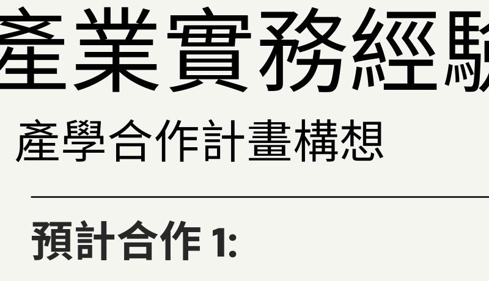
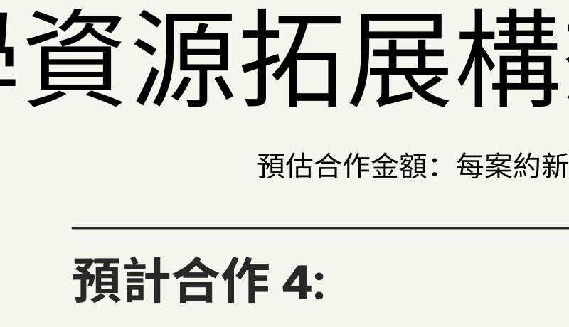

COOPERATION & INTERNSHIP
Industry-Academia Cooperation Blueprints
Connecting corporate resources, promoting mutual industry-academia research grants, and developing student internship pipelines to realize the core values of technical and vocational education in the Department of Business Administration at Vanung University.
🤝 Joint Project & Paid Internship Proposals
Customized collaboration proposals designed for local enterprises to boost operational efficiency and provide students with valuable industry experience.
01
YourChance Pharmacy Collaboration Blueprint

02
Sun-Field Consulting Collaboration Blueprint
03
Sen-Jia Catering (Bright House) Collaboration Blueprint
04
Bright Health & Min Tong Pharmaceutical Collaboration Blueprint
